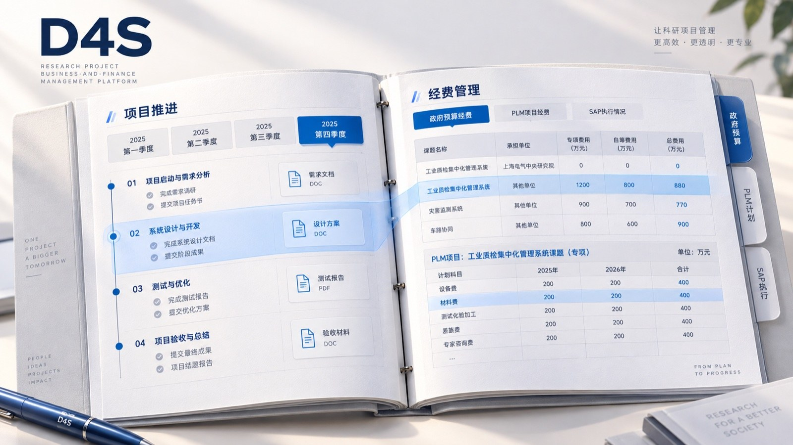

0→1 交互与界面设计 · 已上线
科研项目业财一体化平台
Web
把项目进度、经费核对与成果交付，放进同一条流程。
面向科研型大型组织的项目管理系统。6 类项目角色与 2 类职能角色，分布在配置、项目、财务三个工作端，覆盖立项建项、经费核对、任务策划、跟踪会议、交付与验收。
- 我的角色
- 0→1 交互与界面设计：用户调研、信息架构、三端流程、界面与交付
- 项目时长
- 1 年
- 项目状态
- 已上线，组织内的科研项目均通过该系统流转

01 / OUTCOME
上线后的使用成效。
数据来自上线后 6 个月的项目管理办公室记录与访谈估算。
02 / CONTEXT
进度和经费分在两处，谁都看不全。
项目进度与经费数据分散在不同系统中，管理者难以掌握整体情况；项目成员要在多个页面查找信息、核对数据，协作时也分不清由谁处理、交给谁确认。
调研中，“经费管理”是多数受访者最头疼的环节：涉及角色多、系统壁垒高、线下操作繁琐。
信息不透明
业务与财务数据分离，全局掌握与审计追溯困难。
权责混乱
多类角色权限交织，数据安全与协作效率难以兼顾。
系统难用
功能点过多，操作路径不清，用户容易迷失。
03 / ROLES & STRUCTURE
先分清八类角色，再按职责组织三个工作端。
6 类项目角色推进任务与交付：项目负责人、课题负责人、成果目标负责人、执行负责人、项目助理，以及查看全局的管理负责人；2 类职能角色维护规则与经费：配置管理员、财务人员。
04 / PROJECT & BUDGET
先顺利建好项目，再看清预算与执行。
项目、人员与课题相互关联；经费有不同的资金来源与预算科目，还要对应到具体计划。只看总额，无法知道哪个科目需要进一步核对。
自动带出，用户只填金额。
系统带出预算科目与额度，并预设对应计划与年度分配，减少手工复制与制表。
输入即校验。
录入时比对预算额度与上下限，越界当场标出，把超预算与科目挪用挡在录入阶段。
先看整体，再对照具体科目。
专项与自筹分开查看；预算科目与计划并排呈现；从整体执行比例进入各科目明细。
在背后，配置管理员维护可复用的科目模板；财务人员把待匹配的费用条目归入对应科目，系统先自动匹配，只有遗漏的条目才需要手动处理。我们考虑过模糊匹配自动预填，但纠错成本更高，最终选择“系统负责找，人负责确认”。
05 / PLANNING & TRACKING
先约定要交什么，执行时才有核对依据。
访谈中发现四个问题：抽象的成果目标没有拆成阶段任务；交付物没有统一标准；时间规划缺少灵活的粒度；策划之后缺少跟踪，负责人无法及时掌握进度。
交付物分为三类：证明成果目标的标志性交付物、阶段过程材料、其他材料，各自有录入入口和规范提示。时间支持季度、月度和自定义三种粒度。进度展示把“已交付”和“已确认”并列：交付者知道材料是否提交，课题负责人知道哪些还在等待审核。
06 / TRADE-OFFS
方案对比与设计取舍。
成果总览：材料直达 vs 状态扫读。
探索方案把材料和上传操作直接放进列表，入口近但每行都很拥挤。上线方案把完成状态独立出来：总览负责“发现”，课题负责“处理”。代价是单份材料不在总览直接展开。
任务策划：自由填写 vs 分类说明。
探索方案按季度纵向自由填写，灵活但要靠文字说明交付物类型。上线方案先定位成果再选季度，交付物类型与证明材料就地选择，执行和验收时不必再猜材料属于哪一类。
跟踪足迹：长时间线 vs 节点聚焦。
长时间线便于连续回看，但页面很长。上线方案用三栏：成果与状态、季度节点、该阶段任务与材料，切换目标不丢上下文。代价是跨阶段比较需要切换。
会议与文件也按同样的思路组织：会前通知关联课题、节点和负责人；会后按节点保留纪要与附件；验收材料按审计、技术报告、汇报材料分组准备。
07 / WHAT I LEARNED
从设计单个页面，到梳理完整业务流程。
这次项目积累的不只是复杂表格的界面经验，而是把业务关系转化为交互方案的能力：先梳理多角色的分工，再落到入口、操作和状态上；先理解预算、计划与实际费用的对应规则，再组织页面信息；在方案比较中判断哪些信息要在列表里直接看到，哪些操作适合进入详情后完成，并把理由讲清楚。
上线后的数据说明方向是对的；接下来更值得关注的，是哪些环节仍然让使用者出错或停顿。